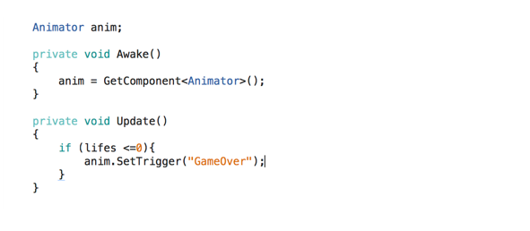

July 1, 2014
We plan to make an easy but interesting game which can be played when player are taking subway or waiting someone. Therefore, we came up with game background story and mechanics.
Background Story
The players mission is to take control of Voltorias most valuable weapon and protect the planet from the soldiers of the evil empire of Ohm who seeks out to destroy it.
Game Mechanics
·The player uses 2 fingers to generate an electric arc between 2 designated contact points in the screen.
·To generate the electric arc, both fingers must be in the contact points on the screen.
The player have a limited energy bar to generate current, each time the player press terminals to generate electric current, the energy bar will consumed.
Player also need to eat voltage to gain energy, if the energy is used up, the player will not be able to generate current. If there are five ohm enemies invading the planet Voltoria, then the game ends.
July 1, 2014
The player uses 2 fingers to press the termina so that it can generate an electric arc.
In order to make the game more interesting and keep player moving or using finger, I came up with the fellowing function:
When players double-click on two terminals, it will generate a line to bounce off the enemy. If the bounce-off enemy collide with the falling enemy, both of them will explode.

After a group discussion, we thought that this function will make the game too difficult to play, so we may not implement it.
July 2
Our first advertising mode is that the player need to watch five-second ADs after game over.
However, this mode has a high risk, that is, the player has large possibility to close the game and do not want to playing the game again.
Therefore, I proposed a new advertising mode. When the player dies, a “Gain one life” window will pop up, the player has two choices, that is, “Yes” and “Skip”.
If the player selects “Skip” in the “Gain one life” window, then, game over. If the player chooses “Yes”, he need to watch the 5-second advertisement, and he will get one life to continue the game after the advertisement ends.
The player only gain one extra life when he died, which means if the player died again, there is no “Gain one life” window anymore. but if the player is dead again, then the game is over and there is no chance of getting another chance.
July 3, 2014
The problem “the associated script cannot be loaded” occurs serval times when I use Unity. Therefore I search the Internet to find solutions, some solutions work, some not. Therefore, I am here making a summary.
· Look at the Console and figure out what is wrong. If the Console is empty, try running the game. It will produce the error and you can then see it in the console.
· Save project, close Unity, open it again.
· Delete the Library and Temp folders in your project folder and re-open Unity. You won't lose anything important, but it will force Unity to re-import everything clean.
· Rename the script.
· Reimport all the scripts.
July 4, 2014
The problem “the associated script cannot be loaded” occurs serval times when I use Unity. Therefore I search the Internet to find solutions, some solutions work, some not. Therefore, I am here making a summary.
· “Feels like the fingers are in the way of seeing the enemies and what is happening”
· “Handles few pixels above your thumbs, so you are able to see them and use them”
· “The battery idea is no that intuitive, it seemed like not having the beam was caused by a bug”. It seemed like the actual life bar and not battery bar.
· “It is better to have wave like behavior or some other type of spawning behavior that allow you to recover battery more easily”.
· Game is too hard.
· Using 2 fingers is hard as a game mechanic.
· Make the game more catchy, so that you want to continue playing it. Add more catchy graphics or sound (like explosions or text feedback or combo chains that increase score continuously)
· Introduce different levels, just to allow the player to learn the mechanics faster. Use the incremental growth for learning.
· Enemy movement to be changed, like zig zag or diagonal, etc.
Summary
After discussion, we are not going to change our “two finger terminal” since it is the point of our game mechanic. But we will improve the fellowing points mentioned in feedback：
· Add positive feedback.
· Make terminals more visible.
· Improve the game over scene.
· Add "+1 life" function to decress the difficluty of the game.
· Make the energy bar more intuitive, so that player can understand the connection between energy bar and their remaining energy.
July 5, 2014
We decide to add positive feedback in game, so I made the word feedback prefab, which can be instantiated when the user gained lives or kill the enemies.
It should be presented at a fixed angle in a fixed position.
· To instantiate prefab:
But the floatingtext is not presented when running the game, because the rotation is not correct, it covered by background.
Quaternions are generally represented in the form: A +bi +cj +dk
Therefore, it is difficult to set desired rotation with Quaternion.Using quaternion to put an gameobject to a specific rotation requires a certain operation. Therefore, assigning quaternion directly is not a good choice.
Using quaternion.euler can transform the quaternions into Euler expressions. Then, assign (x, y, z) values to change the rotation of gameobject.
July 6, 2014
I made a “Game Over” animation in the unity, it will play straight away when you click the play button. But I want it play after player lose their life, so it is better to add a trigger in animation.
· Create a new empty state in Animator.
· Set it as default.
· Make transition to game over clip.
· Create a new trigger named GameOver in Parameters.
· Select the transition, and there is a conditions section appeared in Inspector, then select “GameOver” in conditions.
· Add some code.
